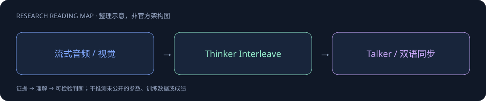
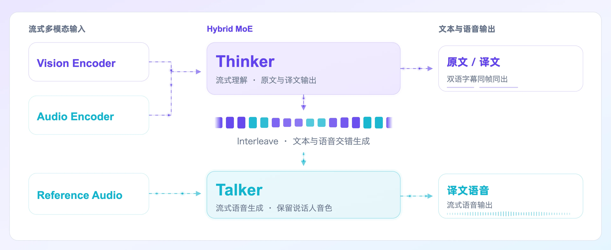
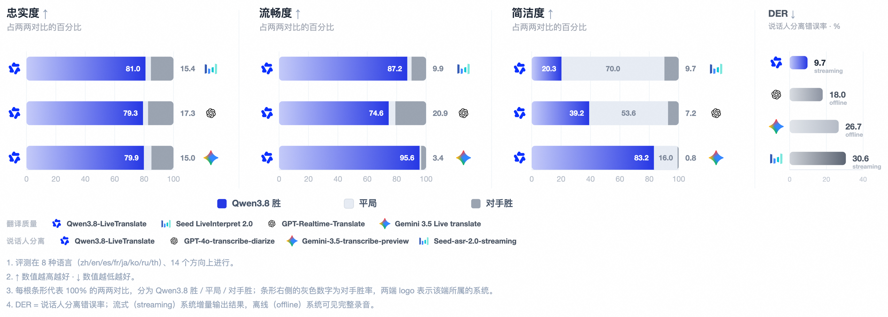

Qwen3.8-LiveTranslate

一页速览
| 维度 | 当前证据 |
|---|---|
| 发布时间 | 2026-09-18 |
| 类型 | 专项支线 / family · Speech |
| 关键事实 1 | 发布：2026-09-18 |
| 关键事实 2 | Interleave architecture |
| 关键事实 3 | LAAL：2.8→2.3 秒 |
| 检查日期 | 2026-10-13；官方原始资料在同级src/ |
实时同传：延迟、上下文和说话人一起建模
9月18日博客明确发布。Hybrid MoE的Thinker–Talker双模块以Interleave衔接：Thinker把视频、音频、原文和译文按时间排成一条因果序列，Talker依据译文和源音频生成译语。已听音频和已出译文可缓存，而不是每一轮重新处理完整历史。

新能力对应不同错误类型
| 能力 | 要解决的错误 | 验收方式 |
|---|---|---|
| 实时说话人分离 | 内容归错人、音色跳变 | 重叠说话、交替发言 |
| 原文译文同步 | 译句无法核对原话 | 双语时间戳与源句对应 |
| 长上下文消歧 | 专名、指代跨轮漂移 | 同名实体与历史术语测试 |
| Interleave | 流式时序不稳、重复重算 | 延迟分布与历史缓存 |
字均延迟LAAL2.8秒降到2.3秒，不等于首包延迟或完整句等待时间。支持输入/文本60种语言、音频输出29种，不能写成60种语音合成。Omnilingua-MSpeaker覆盖14个语向，FLEURS测试70个语向，语向数量亦不是语言数量。

对 Agent Training 的意义
语音翻译的训练目标必须同时管语义保真、说话人身份与时序。只奖励最后翻译文字会遗漏说话人归属和声音同步；只优化低延迟则可能提前译出错误专名。应画质量—LAAL曲线，并测试上下文截断、输入打断、网络抖动、语言切换和未听完句子时的修订。
官方demo中西游记对话与同音词展示了能力形态，不是完整benchmark。模型参数、完整预训练与RL配方未公开，无法提供GLM式架构消融精读；本文依据已读完整博客。动态页面原貌的离线归档仍需补齐，不以HTML壳冒充完整正文。
对 Agent Training 的启发
以上是基于已读官方资料的研究判断，不是官方保证，也没有在本机运行模型推理或复现论文成绩。下一步优先补独立验证器、固定任务/版本和完整失败轨迹，避免只保存最好样例。
一手资料与导航
- [S1] Tech Blog
原始下载文件与SHA-256见 抓取记录。报告保留链接，不抓PDF；动态网页响应若只有壳文件，不将其标成完整离线正文。
📊 相关可视化: Qwen3.8-LiveTranslate 中文Poster